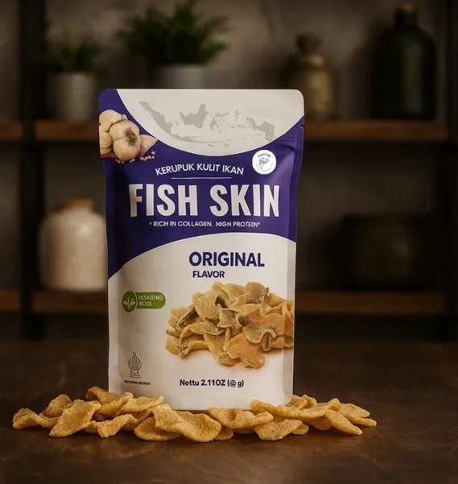
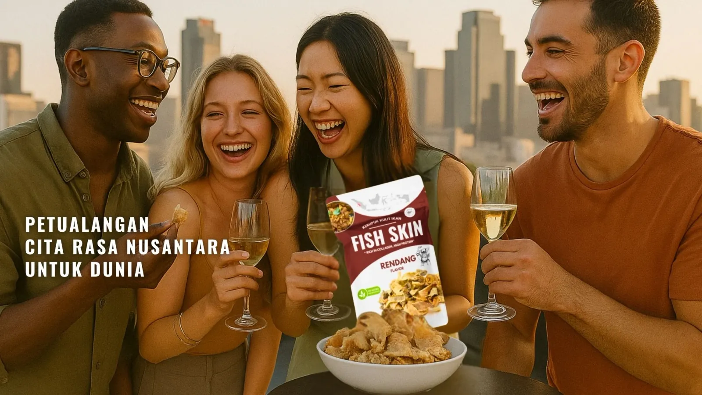
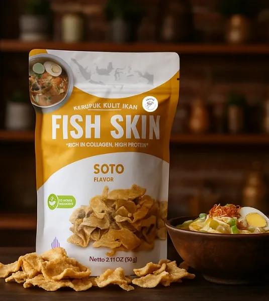
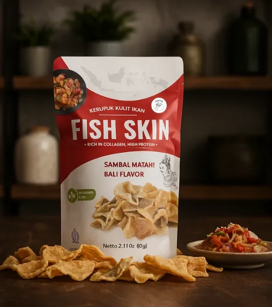
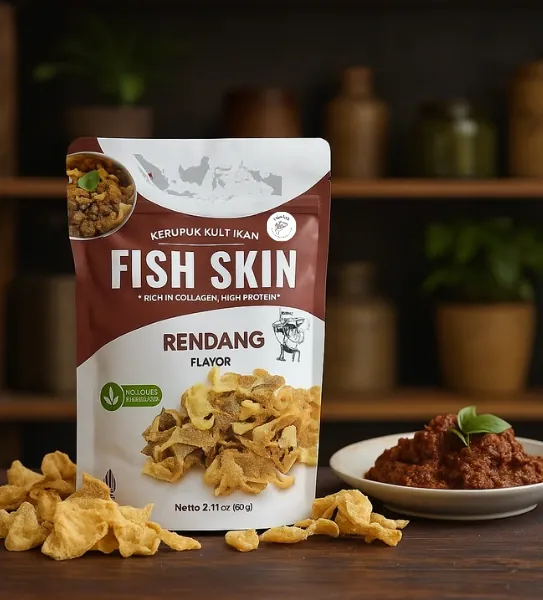
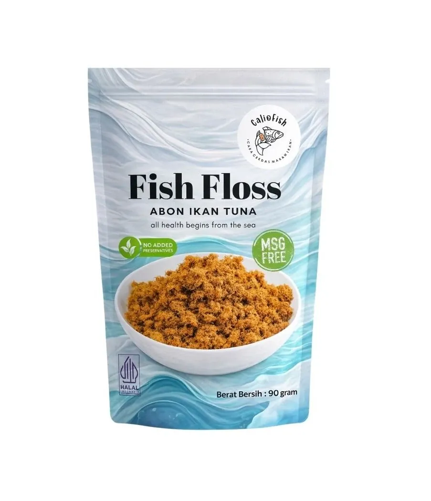

ClassicThe purest expression of crispy Pangasius fish skin — clean, savory, endlessly snackable.
EST. 2022EAST JAVA, INDONESIAHS CODE 160420
We turn overlooked Pangasius fish skin into export‑grade snacks, seasoned with the archipelago's own spice heritage — Rendang, Soto, and Sambal Matah, sealed for a 12‑month journey to any port.

Our Story
Founded in 2022 and based in East Java, Indonesia, PT Calio Pratama Nusantara specializes in transforming Pangasius catfish skin — long overlooked by the fishing industry — into crunchy, flavorful snacks inspired by the rich spices of the Indonesian archipelago. Rendang, Soto, and Sambal Matah: every bite carries a story of tradition and innovation.
We are dedicated to building a sustainable future by cutting fisheries waste, uplifting local fishermen in Malang and Banyuwangi, and carrying the true taste of the archipelago to international tables around the world.
Our Vision
Our Mission
Signature Flavors
Five export‑ready variants, each BPOM & Halal certified, quality‑checked before every shipment.

ClassicThe purest expression of crispy Pangasius fish skin — clean, savory, endlessly snackable.

Herbal & WarmTurmeric, lemongrass and warm herbal spice — the comfort of Indonesia's favorite soup, in a crisp.

Bright & FieryRaw shallot, lemongrass and chili from Bali — a bright, fiery finish on every crunch.

Rich & SpicedSlow-spiced coconut and chili, inspired by West Sumatra's most iconic dish.

New ProductDelicately shredded Yellowfin tuna floss — light, savory, and ready for any table.
Capability
Consistent capacity, documented export terms — engineered to scale seamlessly with distributor demand worldwide.
Packs produced per day across signature variants
Packs produced per month for export distribution
Dry Pangasius fish skin raw material / cycle
Sealed shelf life guaranteed for international ocean freight
* 1 master carton = 20 retail packs. Production output scales directly with buyer volume requirements.
Trust & Compliance
Every flavor holds its own official food safety registration number verified by Indonesia's FDA.
No. ID35110000906340622
Raw material selection, temperature-controlled frying, and nitrogen-purged sealing in every batch.
High-barrier 3‑layer PET/ALU/LLDPE pouch with zip lock, engineered for a 12‑month shelf life.
Frequently Asked Questions
Key details for importers, wholesalers, and retail distributors interested in Caliofish products.
We exclusively use high-quality Pangasius catfish skin sourced sustainably from local fisheries in East Java. The skin is thoroughly cleaned, seasoned with authentic spices, and fried to optimal crispiness.
Yes! All Caliofish products hold official BPOM RI food safety registrations and Halal Indonesia certification (No. ID35110000906340622). Our packaging and export documentation comply with global trade standards.
We offer flexible FOB shipping terms from the Port of Tanjung Perak, Surabaya. We accommodate both LCL (Less than Container Load) for trial orders and FCL (Full Container Load) for large distribution partners.
Our fish skin snacks carry a guaranteed 12-month shelf life. They are packed in high-barrier 3-layer aluminum foil pouches that protect against moisture, light, and oxidation during long ocean voyages.
Get in Touch
For wholesale, export, or distribution inquiries — our management team typically replies within 24 hours.